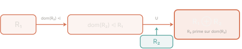

Prérequis : Cours — Relations en B-Méthode : restriction, composition, surcharge
En B-Méthode, une relation r ∈ ℙ(A × B) est un ensemble de paires ordonnées. Plusieurs opérateurs permettent de la filtrer, la combiner ou la transformer sans la reconstruire depuis zéro.
| Opérateur | Notation | Définition | Intuition |
|---|---|---|---|
| Restriction de domaine | S ◁ r | { (a,b) ∈ r | a ∈ S } | Filtre sur la 1ère colonne |
| Anti-restriction de domaine | S ⩤ r | { (a,b) ∈ r | a ∉ S } | Exclut les clés de S |
| Restriction de codomaine | r ▷ T | { (a,b) ∈ r | b ∈ T } | Filtre sur la 2ème colonne |
| Anti-restriction de codomaine | r ⩥ T | { (a,b) ∈ r | b ∉ T } | Exclut les images de T |
| Inverse (converse) | r~ | { (b,a) | (a,b) ∈ r } | Retourne chaque paire |
| Composition | r ; s | { (a,c) | ∃b, (a,b) ∈ r ∧ (b,c) ∈ s } | Chaîne deux relations |
| Surcharge | r ⊕ s | (dom(s) ⩤ r) ∪ s | s écrase r sur ses clés |
Les opérateurs ◁ et ▷ portent le nom du côté de la relation qu'ils filtrent :
Exemple
Soit p = { (1,a), (2,b), (3,a) }.
Analogie
Intuition SQL : une relation r ⊆ A × B ressemble à une table à deux colonnes (clé, valeur).
S ◁ r ≈ WHERE clé IN Sr ▷ T ≈ WHERE valeur IN Tr ⊕ s ≈ UPSERT — s remplace les lignes de r dont la clé est dans dom(s), laisse les autres intactes.Soit A = {0, 1, 2}, B = {a, b, c} et la relation :
Évaluer les expressions suivantes :
{0} ◁ r{1} ⩤ rr ⊕ {(0, c)}r ; r~S ◁ r (restriction — garde les clés dans S) et S ⩤ r (anti-restriction — garde les clés hors de S). Pour b, c'est bien ⩤ : on élimine les paires dont la clé est 1, et on conserve les autres. Pour c, ne pas oublier que la surcharge supprime d'abord les anciennes associations de la clé avant d'ajouter la nouvelle.
Pour a : parcourez chaque paire (x, y) ∈ r et conservez-la si x ∈ {0}. Pour b : c'est une anti-restriction — conservez les paires dont x ∉ {1}. Dans les deux cas, la valeur y n'entre pas en compte.
Pour c : appliquez la définition de la surcharge — r ⊕ s = (dom(s) ⩤ r) ∪ s. Ici s = {(0, c)}, donc dom(s) = {0}. Commencez par supprimer de r toutes les paires dont la clé est 0.
Pour d : calculez d'abord r~ en inversant chaque paire de r, puis appliquez la définition de la composition (chercher un intermédiaire commun).
r~ = { (a, 0), (b, 0), (c, 1) }
Pour r ; r~ : (x, z) ∈ r ; r~ si et seulement si ∃y, (x, y) ∈ r et (y, z) ∈ r~, c'est-à-dire (z, y) ∈ r. Testez toutes les combinaisons possibles de x ∈ {0, 1} et z ∈ {0, 1}.
a. {0} ◁ r — conserver les paires dont l'antécédent est dans {0} :
{0} ◁ r = { (0, a), (0, b) }
b. {1} ⩤ r — conserver les paires dont l'antécédent n'est pas dans {1} :
{1} ⩤ r = { (0, a), (0, b) }
c. r ⊕ {(0, c)} — surcharge de r par {(0, c)} :
Étape 1 — dom({(0, c)}) = {0}.
Étape 2 — supprimer de r toutes les paires dont la clé est dans {0} :
{0} ⩤ r = { (1, c) }
Étape 3 — union avec {(0, c)} :
r ⊕ {(0, c)} = { (0, c), (1, c) }
Les deux associations (0→a) et (0→b) sont remplacées par l'unique association (0→c). C'est le rôle de la surcharge : écraser les anciennes valeurs d'une clé par la nouvelle.
d. r ; r~ — composition de r avec son inverse :
On calcule d'abord r~ en inversant chaque paire :
On cherche ensuite (x, z) tels que ∃ y intermédiaire avec (x, y) ∈ r et (y, z) ∈ r~ :
| (x, y) ∈ r | Intermédiaire y | (y, z) ∈ r~ | Paire produite (x, z) |
|---|---|---|---|
| (0, a) | y = a | (a, 0) | (0, 0) ✓ |
| (0, b) | y = b | (b, 0) | (0, 0) — déjà produite |
| (1, c) | y = c | (c, 1) | (1, 1) ✓ |
r ; r~ = { (0, 0), (1, 1) }
C'est la relation identité restreinte au domaine de r : dom(r) = {0, 1}. Ce résultat se généralise : pour toute injection r, on a toujours r ; r~ = Iddom(r).

Surcharge R₁ ⊕ R₂ : supprimer de R₁ les clés de dom(R₂), puis faire l'union avec R₂.
Soit les relations :
et les ensembles E = {1, 2, 3} et F = {5, 7, 9}.
Calculer :
E ◁ R₁E ⩤ R₁R₁ ▷ FR₁ ⩥ FR₁ ⊕ R₂ (⊕ désigne la surcharge)R₁ ⊕ R₂, ne pas oublier d'éliminer d'abord de R₁ toutes les paires dont la clé appartient à dom(R₂), puis de faire l'union. Ajouter simplement R₂ à R₁ sans supprimer les anciennes associations donne une relation incohérente où une même clé a deux images différentes.
Commencez par identifier domaines et codomaines :
Pour chaque opération, seules les paires dont la clé (ou la valeur) intersecte E, F ou dom(R₂) sont concernées.
Pour R₁ ⊕ R₂ — rappel de la définition :
R₁ ⊕ R₂ = (dom(R₂) ⩤ R₁) ∪ R₂
dom(R₂) = {3, 5}. Supprimez de R₁ toute paire commençant par 3 ou 5. Il ne reste que {(2,1),(2,8),(4,7),(4,9)}. Faites ensuite l'union avec R₂ = {(3,3),(5,4)}.
E ◁ R₁ — restriction au domaine E = {1, 2, 3} :
| Paire | Antécédent ∈ E ? | Conservée |
|---|---|---|
| (2, 1) | 2 ∈ {1,2,3} ✓ | ✓ |
| (2, 8) | 2 ∈ {1,2,3} ✓ | ✓ |
| (3, 9) | 3 ∈ {1,2,3} ✓ | ✓ |
| (4, 7) | 4 ∉ {1,2,3} ✗ | ✗ |
| (4, 9) | 4 ∉ {1,2,3} ✗ | ✗ |
E ⩤ R₁ — anti-restriction de domaine (complémentaire de la restriction) :
On garde exactement les paires éliminées par E ◁ R₁ — celles dont l'antécédent n'appartient pas à E :
E ⩤ R₁ = { (4, 7), (4, 9) }
Vérification : (E ◁ R₁) ∪ (E ⩤ R₁) = R₁ ✓
R₁ ▷ F — restriction au codomaine F = {5, 7, 9} :
| Paire | Image ∈ F ? | Conservée |
|---|---|---|
| (2, 1) | 1 ∉ {5,7,9} ✗ | ✗ |
| (2, 8) | 8 ∉ {5,7,9} ✗ | ✗ |
| (3, 9) | 9 ∈ {5,7,9} ✓ | ✓ |
| (4, 7) | 7 ∈ {5,7,9} ✓ | ✓ |
| (4, 9) | 9 ∈ {5,7,9} ✓ | ✓ |
R₁ ⩥ F — anti-restriction au codomaine F = {5, 7, 9} : conserver les paires dont l'image n'est pas dans F :
| Paire | Image ∉ F ? | Conservée |
|---|---|---|
| (2, 1) | 1 ∉ {5,7,9} ✓ | ✓ |
| (2, 8) | 8 ∉ {5,7,9} ✓ | ✓ |
| (3, 9) | 9 ∈ {5,7,9} ✗ | ✗ |
| (4, 7) | 7 ∈ {5,7,9} ✗ | ✗ |
| (4, 9) | 9 ∈ {5,7,9} ✗ | ✗ |
Vérification : (R₁ ▷ F) ∪ (R₁ ⩥ F) = R₁ ✓
R₁ ⊕ R₂ — surcharge de R₁ par R₂ :
Étape 1 — identifier dom(R₂) = {3, 5}.
Étape 2 — supprimer de R₁ les paires dont l'antécédent est dans {3, 5} :
dom(R₂) ⩤ R₁ = R₁ \ { (3, 9) } = { (2, 1), (2, 8), (4, 7), (4, 9) }
Étape 3 — faire l'union avec R₂ = { (3, 3), (5, 4) } :
R₁ ⊕ R₂ = { (2, 1), (2, 8), (3, 3), (4, 7), (4, 9), (5, 4) }
L'ancienne association (3 → 9) ∈ R₁ est remplacée par (3 → 3) ∈ R₂. C'est le sens de la surcharge : R₂ a priorité sur R₁ pour les clés de dom(R₂), et les autres clés de R₁ restent inchangées.
Point méthode — surcharge
Définition formelle : R₁ ⊕ R₂ = (dom(R₂) ⩤ R₁) ∪ R₂
On retrouve la même logique qu'une mise à jour de dictionnaire Python (d1 | d2) ou un UPSERT SQL : les nouvelles associations écrasent les anciennes, les clés absentes de R₂ restent inchangées dans R₁.
r ▷ T à l'aide de la composition avec IdT : r ; IdT. Est-ce équivalent ?